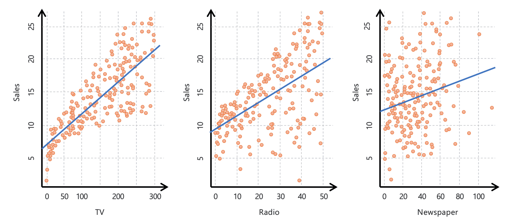
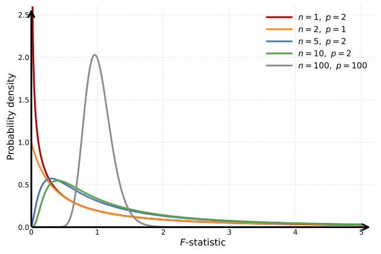
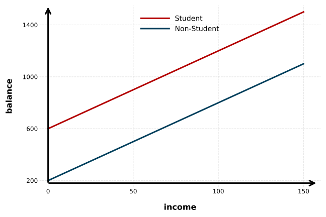
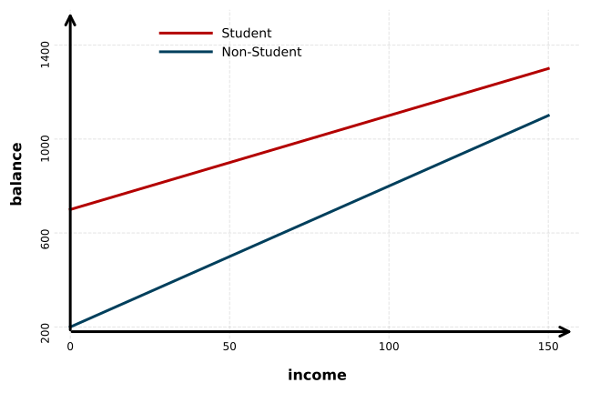

Học máy
Bài 2: Hồi quy tuyến tính
Trường ĐH Công nghệ – Đại học Quốc gia Hà Nội
Nội dung
1.
Hồi quy tuyến tính đơn
Tìm quan hệ tuyến tính

- Quan sát: Ngân sách tăng ⇒ doanh thu có xu hướng tăng.
- Đường xanh: Hồi quy tuyến tính đơn (bình phương tối thiểu).
Câu hỏi liên quan
- Có mối quan hệ giữa ngân sách quảng cáo và doanh thu không?
- Mối quan hệ mạnh đến mức nào (dự đoán được tốt không)?
- Kênh nào đóng góp vào doanh thu (TV/Đài/Báo)?
- Ước lượng hiệu ứng của một kênh chính xác đến đâu?
- Dự đoán doanh thu tương lai chính xác đến đâu?
- Quan hệ có thực sự tuyến tính không?
- Có hiệu ứng cộng hưởng giữa các kênh quảng cáo không?
Hồi quy tuyến tính đơn
- Ví dụ: \(\text{sales} \approx \beta_0 + \beta_1 \times \text{TV}\)
- Dự đoán của \(Y\) khi \( X=x_i \) là \(\hat{y}_i = \hat{\beta}_0 + \hat{\beta}_1 x_i\)
- \(\beta_0\) (hệ số chặn), \(\beta_1\) (hệ số góc) là tham số của mô hình
➡️ Đầu vào: Dữ liệu huấn luyện: \((x_1,y_1),\ldots,(x_n,y_n)\)
🎯 Mục tiêu: Ước lượng tham số \(\hat{\beta}_0,\hat{\beta}_1\) sao cho \[ y_i \approx \hat{\beta}_0 + \hat{\beta}_1 x_i \] với mọi \(i=1,\ldots,n\) và các giá trị mới của \(X\).
Ước lượng tham số
Phương pháp: Bình phương tối thiểu (Least Squares)
- Sai số tại điểm dữ liệu \(i\) là \(e_i = y_i - \hat{y}_i\).
- Với bài toán hồi quy, ta thường dùng tổng bình phương sai số (Residual Sum of Squares, RSS) để đánh giá độ phù hợp của mô hình: \[ RSS = e_{1}^{2} + e_{2}^{2} + \cdots + e_{n}^{2} \\ = (y_1 - \hat{\beta}_0 - \hat{\beta}_1 x_1)^2 + (y_2 - \hat{\beta}_0 - \hat{\beta}_1 x_2)^2 + \cdots + (y_n - \hat{\beta}_0 - \hat{\beta}_1 x_n)^2 \\ \]
- Mục tiêu: Chọn \(\hat{\beta}_0,\hat{\beta}_1\) để tối thiểu hoá \(RSS\).
Ước lượng tham số
Phương pháp: Bình phương tối thiểu (Least Squares)

Ước lượng tham số
Phương pháp: Bình phương tối thiểu (Least Squares)
Hàm RSS là hàm bậc hai theo \(\hat{\beta}_0,\hat{\beta}_1\) ⇒ có nghiệm duy nhất.
- \(\hat{\beta}_1 = \frac{\sum_{i=1}^{n}(x_i-\bar{x})(y_i-\bar{y})}{\sum_{i=1}^{n}(x_i-\bar{x})^2}\)
- \(\hat{\beta}_0 = \bar{y} - \hat{\beta}_1 \bar{x}\)
Trong đó \(\bar{x}=\frac{1}{n}\sum_{i=1}^{n}x_i\), \(\bar{y}=\frac{1}{n}\sum_{i=1}^{n}y_i\).
Đường hồi quy luôn đi qua \((\bar{x},\bar{y})\).
Ước lượng tham số
Phương pháp: Bình phương tối thiểu (Least Squares)

2.
Độ chính xác của ước lượng
Tổng quan
Ta giả sử quan hệ “thật sự” có nhiễu (độc lập với quan sát):
\[ Y=\beta_0+\beta_1X+\epsilon \quad \]
Tổng quan
Ta giả sử quan hệ “thật sự” có nhiễu (độc lập với quan sát):
\[ Y=\beta_0+\beta_1X+\epsilon \quad \]
Đường hồi quy quần thể \(y = \beta_0 + \beta_1 x\) là xấp xỉ tuyến tính tốt nhất giữa \(X\) và \(Y\).
- Thực tế không quan sát được trực tiếp.

Xanh: Đường hồi quy tuyến tính
Tổng quan
Ta giả sử quan hệ “thật sự” có nhiễu (độc lập với quan sát):
\[ Y=\beta_0+\beta_1X+\epsilon \quad \]
Đường hồi quy quần thể \(y = \beta_0 + \beta_1 x\) là xấp xỉ tuyến tính tốt nhất giữa \(X\) và \(Y\).
- Thực tế không quan sát được trực tiếp.
Đường hồi quy tuyến tính (bình phương tối thiểu) trên dữ liệu huấn luyện:
\[ \hat{y}=\hat{\beta}_0+\hat{\beta}_1x \]
- Phụ thuộc vào bộ dữ liệu huấn luyện (hữu hạn).

Ước lượng không chệch
Cách ước lượng trung bình \(\mu\) của biến ngẫu nhiên \(Y\)?
\(\to\) Ước lượng bằng trung bình của mẫu hữu hạn:
\[ \mathrm{avg}(y_1,y_2,\ldots,y_n)=\frac{1}{n}\sum_{i=1}^{n}y_i=\bar{y} \]
- Trung bình theo nhiều lần lấy mẫu: \(\mathbb{E}[\bar{y}]=\mu\).
- Theo định nghĩa, \(\bar{y}\) là một ước lượng không chệch của \(\mu\).
Ước lượng không chệch
- Đường hồi quy tuyến tính (bình phương tối thiểu) là ước lượng không chệch cho đường hồi quy quần thể.
- Trong các ước lượng tuyến tính không chệch, đường này có phương sai nhỏ nhất.
⭐️ Đây là nội dung của Định lý Gauss–Markov.
Độ chính xác của ước lượng
\(\hat{\mu}\) (ước lượng của \(\mu\)) chính xác đến đâu?
- Giả sử các mẫu độc lập ⇒ standard error của \(\hat{\mu}\):
\[ SE(\hat{\mu})=\sqrt{\mathrm{Var}(\hat{\mu})}=\sqrt{\sigma^2/n} \]
- \(n\): số mẫu, \(\sigma\): độ lệch chuẩn quần thể.
- Nhiều mẫu hơn ⇒ SE nhỏ hơn.
Độ chính xác của ước lượng
Standard errors của \(\hat{\beta}_0,\hat{\beta}_1\):
\[ SE(\hat{\beta}_0)^2=\sigma^2\left[\frac{1}{n}+\frac{\bar{x}^2}{\sum_{i=1}^{n}(x_i-\bar{x})^2}\right] \] \[ SE(\hat{\beta}_1)^2=\frac{\sigma^2}{\sum_{i=1}^{n}(x_i-\bar{x})^2} \]
Ta tiếp tục giả sử nhiễu độc lập, không tương quan với đầu vào, và có phương sai chung \(\sigma^2=\mathrm{Var}(\epsilon)\).
Độ chính xác của ước lượng
- \(SE(\hat{\beta}_1)\) giảm khi các \(x_i\) “trải rộng” hơn ⇒ hệ số góc dễ ước lượng hơn.
- \(SE(\hat{\beta}_0)=SE(\hat{\mu})\) nếu \(\bar{x}=0\); khi đó \(\hat{\beta}_0=\bar{y}\).
- \(\sigma\) thường không biết ⇒ ước lượng từ mẫu bằng RSE:
\[ RSE=\sqrt{RSS/(n-2)} \] (Tại sao chia cho \(n-2\) ?)

Khoảng tin cậy
Khoảng tin cậy 95% (CI 95%):
- Khoảng “chứa” giá trị thật với xác suất 95% khi lặp lại lấy mẫu.
- Ta tính cận từ dữ liệu huấn luyện (training data).

Khoảng tin cậy
Với \(\hat{\beta}_0\): \(\left[\hat{\beta}_0-2\cdot SE(\hat{\beta}_0),\;\hat{\beta}_0+2\cdot SE(\hat{\beta}_0)\right]\)
Với \(\hat{\beta}_1\): \(\left[\hat{\beta}_1-2\cdot SE(\hat{\beta}_1),\;\hat{\beta}_1+2\cdot SE(\hat{\beta}_1)\right]\)
Vì sao?
- Giả sử sai số \(\epsilon\) theo phân phối Gaussian (Định lý Giới hạn Trung tâm) ⇒ \(Y\) cũng Gaussian.
- Khi đó \(\hat{\beta}_0\) và \(\hat{\beta}_1\) cũng Gaussian.
Ví dụ
Dữ liệu ngân sách quảng cáo TV

Kiểm định giả thuyết
Khi nào kết luận có mối quan hệ “đáng kể” giữa \(X\) và \(Y\)?
- Kiểm định giả thuyết \(H_0\) (không có mối liên hệ) vs. \(H_a\) (có mối liên hệ).
- Hồi quy tuyến tính đơn: \(H_0:\beta_1=0\) vs. \(H_a:\beta_1\neq 0\).
Làm sao biết \(\beta_1\) “đủ xa 0”?
- Phụ thuộc vào độ chính xác của \(\hat{\beta}_1\), tức là \(SE(\hat{\beta}_1)\).
Kiểm định giả thuyết
t-statistic là độ lệch “chuẩn hoá” của \(\hat{\beta}_1\) khỏi 0:
\[ t=\frac{\hat{\beta}_1-0}{SE(\hat{\beta}_1)} \]
- Cũng gần giống “z-score”; có dạng chuông.
- Với \(n>30\), khá gần phân phối chuẩn.

Kiểm định giả thuyết
Ta có thể tính xác suất \(|t|\) vượt một giá trị nào đó.
- Ví dụ: \(|t|>2\) thì xấp xỉ 5%.
- Xác suất này gọi là \(p\)-value.
Kiểm định giả thuyết
Nếu \(p\)-value nhỏ ⇒ khó tin rằng mối liên hệ quan sát được chỉ do ngẫu nhiên (khó tin \(H_0: \beta_1 = 0\) đúng).
- \(p=5\%\): nếu \(H_0\) đúng, kết quả “tốt ngang hoặc tốt hơn” xảy ra tối đa 5% bộ dữ liệu.
- Bác bỏ \(H_0\) ở mức ý nghĩa \(\alpha\) nếu \(p \le \alpha\).
Mức ý nghĩa thường dùng: \(\alpha=5\%\) hoặc \(1\%\).
Ví dụ
| Hệ số | Sai số chuẩn | t-statistic | p-value | |
|---|---|---|---|---|
| Chặn | 7.0325 | 0.4578 | 15.36 | <0.0001 |
| TV | 0.0475 | 0.0027 | 17.67 | <0.0001 |
| Hệ số | Sai số chuẩn | t-statistic | p-value | |
|---|---|---|---|---|
| Chặn | 9.312 | 0.563 | 16.54 | <0.0001 |
| Radio | 0.203 | 0.020 | 9.92 | <0.0001 |
| Hệ số | Sai số chuẩn | t-statistic | p-value | |
|---|---|---|---|---|
| Chặn | 12.351 | 0.621 | 19.88 | <0.0001 |
| Newspaper | 0.055 | 0.017 | 3.30 | <0.0001 |

Các độ đo khác
\(R^2\)-statistic
- \(R^2 \in [0,1]\), không phụ thuộc thang đo của \(Y\).
- \(TSS = \sum_{i=1}^{n}(y_i-\bar{y})^2\): tổng phương sai của \(Y\).
- \(TSS - RSS\): phần phương sai “giải thích” bởi hồi quy.
Hệ số tương quan
Correlation
- Tương quan mẫu đo mức “tuyến tính” giữa \(X\) và \(Y\).
- Trong hồi quy tuyến tính đơn: \(\mathrm{Cor}(X,Y)^2 = R^2\).
- Không đúng với hồi quy bội, và không đúng với mô hình không dùng bình phương tối thiểu.
3.
Hồi quy tuyến tính bội
Mô hình nhiều biến
- Ta giả sử \(Y\) có mối liên hệ tuyến tính với nhiều biến đầu vào \(X_1,X_2,\ldots,X_p\): \[ Y = \beta_0 + \beta_1 X_1 + \beta_2 X_2 + \cdots + \beta_p X_p + \epsilon \]
- Ví dụ quảng cáo: \(sales = \beta_0 + \beta_1 \times TV + \beta_2 \times radio + \beta_3 \times newspaper + \epsilon\).
Dạng vector
Tổng bình phương sai số
- \(\mathbf{x}_i\) là vector đầu vào của mẫu \(i\).
- Ta chọn \(\hat{\boldsymbol{\beta}}\) để tối thiểu hoá \(RSS\).
Ước lượng tham số
\[ \frac{\partial RSS}{\partial \hat{\boldsymbol{\beta}}} = -2X^T\big(Y - X\hat{\boldsymbol{\beta}}\big) \]
\[ \frac{\partial^2 RSS}{\partial \hat{\boldsymbol{\beta}}\,\partial \hat{\boldsymbol{\beta}}^T} = 2X^TX \]
- Giả sử \(X\) có hạng cột đầy đủ ⇒ \(X^TX\) xác định dương*.
- Khi đó \(RSS\) có một nghiệm tối thiểu duy nhất (tại đó đạo hàm bậc nhất bằng 0).
* Ma trận \(A\) là xác định dương nếu với mọi vector \(x\neq 0\) ta có \(x^TAx > 0\). 0\).
Ước lượng tham số
Đặt \(\frac{\partial RSS}{\partial \hat{\boldsymbol{\beta}}} = -2X^T\big(Y - X\hat{\boldsymbol{\beta}}\big)=0\).
Suy ra \( \hat{\boldsymbol{\beta}}=(X^TX)^{-1}X^TY \).
Tổng quát, ta có: \( \hat{\mathbf{Y}}=X\hat{\boldsymbol{\beta}}=\underbrace{X(X^TX)^{-1}X^T}_{\color{red}{\text{ma trận chiếu }H}}\,\mathbf{Y} \).
Diễn giải hồi quy tuyến tính bội

Trực quan trong không gian \(\mathbb{R}^p\) do \(p\) đặc trưng sinh ra.
Diễn giải hình học 1
- \(p\) đặc trưng cùng nhau tạo nên một không gian \(p\)-chiều, nơi \(n\) quan sát “nằm” trong đó.
- Mặt phẳng hồi quy là mặt phẳng “ôm” các điểm tốt nhất.
- “Tốt nhất” được đo bằng cực tiểu hoá: \[ RSS(\hat{\boldsymbol{\beta}})=\|Y-X\hat{\boldsymbol{\beta}}\|^2 \]
Diễn giải hồi quy tuyến tính bội

Trực quan trong không gian \(\mathbb{R}^n\) do \(n\) dữ liệu quan sát sinh ra.
Diễn giải hình học 2
- \(x_0,\ldots,x_p\) (với \(x_0\equiv 1\)) sinh ra một không gian con \(p\)-chiều trong \(\mathbb{R}^n\).
- Cực tiểu hoá \(\|Y-X\hat{\boldsymbol{\beta}}\|^2\) tương đương chiếu vuông góc vector \(y\) lên không gian con này.
- ⇒ \(H\) còn gọi là ma trận chiếu (projection matrix).
Tính không chệch
\[ \hat{\beta}=(X^TX)^{-1}X^TY \qquad Y=X\beta+\epsilon \]
\[ \hat{\beta}=(X^TX)^{-1}X^T(X\beta+\epsilon) =(X^TX)^{-1}X^TX\beta+(X^TX)^{-1}X^T\epsilon \\ =\beta+(X^TX)^{-1}X^T\epsilon \]
\[ \mathbb{E}[\hat{\beta}\mid X] =\mathbb{E}\!\left[\beta+(X^TX)^{-1}X^T\epsilon\mid X\right] \\ =\beta+(X^TX)^{-1}X^T\mathbb{E}[\epsilon\mid X] =\beta \]
Ghi chú: Dùng \(\mathbb{E}[\epsilon\mid X]=0\) và giả định nhiễu \(\epsilon\) độc lập với \(X\).
Hồi quy đơn
- Với mỗi giá trị input đang xét, ta bỏ qua các đặc trưng còn lại.
Hồi quy bội
- Với mỗi giá trị input đang xét, ta giữ cố định các đặc trưng còn lại.
| Hệ số | Sai số chuẩn | t-statistic | p-value | |
|---|---|---|---|---|
| Chặn | 2.939 | 0.3119 | 9.42 | <0.0001 |
| TV | 0.046 | 0.0014 | 32.81 | <0.0001 |
| radio | 0.189 | 0.0086 | 21.89 | <0.0001 |
| newspaper | -0.001 | 0.0059 | -0.18 | 0.8599 |
Diễn giải
Vì sao newspaper có ý nghĩa ở mô hình đơn nhưng không ở mô hình bội?
- Tương quan giữa newspaper và radio khoảng \(0.35\): Nơi chi nhiều cho newspaper thường cũng chi nhiều cho radio.
- Trong hồi quy đơn, ta “gán” một phần doanh số cho newspaper mà thực ra có thể do radio tạo ra.
- Nói cách khác: newspaper là đại diện (surrogate) cho radio.
| TV | radio | newspaper | sales | |
|---|---|---|---|---|
| TV | 1.0000 | 0.0548 | 0.0567 | 0.7822 |
| radio | 1.0000 | 0.3541 | 0.5762 | |
| newspaper | 1.0000 | 0.2283 | ||
| sales | 1.0000 |
Tương quan \(\neq\) nhân quả
Vì sao các tương quan “kỳ lạ” vẫn xảy ra?
- Số lượng chim cò tương quan cao với số lượng trẻ sơ sinh.
- Số lượng cây xăng tương quan cao với số lượng ly hôn.
Trong các ví dụ này, có một yếu tố khác mới thật sự gây ra cả hai đại lượng.
- Nếu yếu tố đó có trong dữ liệu, mô hình bội có thể giúp ta tìm ra.
- Nếu không, đó là yếu tố nhiễu (hidden confounder) ⇒ dễ khiến ta suy luận sai quan hệ nhân quả.
4 câu hỏi quan trọng
- Có ít nhất một biến dự báo hữu ích không?
- Tập biến nào là hữu ích?
- Mô hình khớp dữ liệu tốt đến đâu?
- Dự đoán chính xác đến mức nào?
Câu hỏi 1: Có biến nào hữu ích?
- Kiểm định: \( H_0:\beta_1=\beta_2=\cdots=\beta_p=0 \quad \text{vs.}\quad H_a:\text{tồn tại }\beta_j\neq 0 \)
- Dùng F-statistic: \[ F=\frac{(TSS-RSS)/p}{RSS/(n-p-1)} \]

- Nếu \(H_0\) đúng ⇒ \(F\approx 1\); nếu sai ⇒ \(F>1\).
- Với dữ liệu quảng cáo: \(F=570\).
- Nhìn chung \(F\) tuân theo Phân phối F (F-distribution).
Câu hỏi 2: Tập con biến nào hữu ích?
- Kiểm định xem \(q\) biến “cuối” có thêm thông tin không:
\( H_0:\beta_{p-q+1}=\cdots=\beta_p=0 \) - F-statistic tương ứng: \( F=\frac{(RSS_0-RSS)/q}{RSS/(n-p-1)} \) với \(RSS_0\) là RSS của mô hình không gồm \(q\) biến đó.
- t-statistic trong bảng = căn bậc hai của \(F\) (trường hợp 1 biến).
- Ví dụ: newspaper không hữu ích khi đã có TV và radio.
| Hệ số | Sai số chuẩn | t-statistic | p-value | |
|---|---|---|---|---|
| Chặn | 2.939 | 0.3119 | 9.42 | <0.0001 |
| TV | 0.046 | 0.0014 | 32.81 | <0.0001 |
| radio | 0.189 | 0.0086 | 21.89 | <0.0001 |
| newspaper | -0.001 | 0.0059 | -0.18 | 0.8599 |
Rủi ro đa kiểm định
- Khi có nhiều biến, không nên chỉ nhìn p-value từng biến.
- Giả sử dữ liệu không có liên hệ thật:
\(H_0:\beta_1=\cdots=\beta_p=0\) (vd p=100), và \(Y\) ngẫu nhiên.
- Đa kiểm định: đặt ngưỡng 0.05 ⇒ ~5% p-value < 0.05 do may mắn ⇒ với 100 biến dễ có vài biến “có ý nghĩa” giả.
- t-test không “phạt” vì thử nhiều biến; F-test kiểm định cả mô hình và tính đến số lượng biến.
- Nếu \(p > n\): OLS/t-test/F-test cổ điển không ổn ⇒ sẽ cần các phương pháp khác.
Preview: Chọn đặc trưng
- Thực tế, đầu ra thường chỉ phụ thuộc vào một vài đặc trưng (biến).
- Bài toán tìm các biến đó gọi là lựa chọn đặc trưng (variable/feature selection).
- Sẽ học kỹ ở phần sau; ở đây chỉ “preview”.
Tìm tập con đặc trưng tốt nhất
- Thử mọi tập con đặc trưng. Ví dụ:
- p=3: {TV, radio, newspaper} ⇒ 8 mô hình (đầy đủ, TV+radio, TV+newspaper, radio+newspaper, TV, radio, newspaper, rỗng).
- Có \(2^p\) mô hình; nếu \(p=30\) thì \(2^{30}=1{,}073{,}741{,}824\) mô hình. (!!!)
- Đánh giá mô hình không dựa vào training error → cần ước lượng test error.

Forward / Backward / Mixed selection
Forward selection
- Bắt đầu từ mô hình rỗng.
- Fit \(p\) mô hình (mỗi mô hình 1 biến), chọn RSS nhỏ nhất.
- Thử thêm từng biến còn lại, chọn RSS nhỏ nhất.
- Lặp đến khi đạt tiêu chí dừng.
Backward selection
- Bắt đầu từ mô hình đầy đủ.
- Loại biến có \(p\)-value lớn nhất (theo F-statistic).
- Lặp đến khi đạt tiêu chí dừng.
Mixed selection
- Bắt đầu từ mô hình rỗng.
- Thêm biến đến khi biến thêm vào trở nên không còn ý nghĩa.
- Loại biến đến khi không còn biến “không ý nghĩa”.
- Lặp đến khi: biến trong mô hình đều “có ý nghĩa”, biến ngoài thì không.
Câu hỏi 3: Mô hình khớp dữ liệu tốt đến đâu?
- Thước đo phổ biến: RSE và \(R^2\).
- Hồi quy đơn: \( R^2=\mathrm{Cor}(X,\hat{Y})^2 \)
- Hồi quy bội: \( R^2=\mathrm{Cor}(Y,\hat{Y})^2 \)
- Trong các mô hình tuyến tính, mô hình “tuyến tính đầy đủ” tối đa hoá tương quan giữa \(Y\) và \(\hat{Y}\) ⇒ có \(R^2\) cao nhất.
- \(R^2\) tăng đơn điệu khi thêm biến (kể cả biến yếu) → cần xem test error.

Câu hỏi 4: Dự đoán chính xác đến đâu?
- Dù biết quan hệ thật, vẫn luôn có irreducible error (nhiễu \(\varepsilon\)).
- Khoảng tin cậy (Confidence interval): biến thiên của ước lượng qua nhiều mẫu.
- Khoảng dự đoán (Prediction interval): biến thiên của dự đoán cho một input cụ thể.
- Vì thế: prediction interval luôn rộng hơn confidence interval.
Câu hỏi 4: Dự đoán chính xác đến đâu?
Ví dụ Quảng cáo: TV=\(\$100{,}000\), radio=\(\$20{,}000\)
- 95% CI: \(\text{sales}\in[10985,11528]\)
- 95% PI: \(\text{sales}\in[7930,14580]\)
\[ y=\hat{y}\pm t_{\alpha/2,n-p-1}\sqrt{MSE\left(\frac{1}{n}+\frac{(x_0-\bar{x})^2}{\sum_{i=1}^{n}(x_i-\bar{x})^2}\right)} \]
\[ y=\hat{y}\pm t_{\alpha/2,n-p-1}\sqrt{MSE\left(1+\frac{1}{n}+\frac{(x_0-\bar{x})^2}{\sum_{i=1}^{n}(x_i-\bar{x})^2}\right)} \]
4.
Biến định tính và tương tác
Biến định tính
Ví dụ dữ liệu tín dụng (\(n=400\))
- Output: số dư tín dụng
- Biến định lượng: tuổi, số lượng thẻ, số năm được giáo dục, thu nhập (K$), hạn mức, xếp hạng
- Biến định tính: giới tính (nam/nữ), là sinh viên (có/không), tình trạng hôn nhân, khu vực (3 giá trị)

Biến nhị phân: dummy variable
- Thêm một dummy, ví dụ giới tính: \[ x_i= \begin{cases} 1 & \text{nếu người thứ }i\text{ là nam}\\ 0 & \text{nếu người thứ }i\text{ là nữ} \end{cases} \]
- Mô hình:
\(
y_i=\beta_0+\beta_1 x_i+\epsilon_i
\)
- \(\beta_0\): số dư (balance) trung bình của nữ.
- \(\beta_0+\beta_1\): số dư (balance) trung bình của nam.
- Có thể mã hoá bằng \(-1/1\) thay vì \(0/1\).
- Cách mã hoá chỉ thay đổi cách diễn giải của hệ số, không đổi kết quả hồi quy.
Biến nhiều mức: dùng nhiều dummy
- Nếu biến có \(k\) giá trị → dùng \(k-1\) dummy.
- Ví dụ biến khu vực có 3 giá trị (Đông, Nam, Tây) → dùng 2 dummy: \[ x_{i1}= \begin{cases} 1 & \text{Nam}\\ 0 & \text{khác Nam} \end{cases} \qquad x_{i2}= \begin{cases} 1 & \text{Tây}\\ 0 & \text{khác Tây} \end{cases} \]
- Mô hình:
\(
y_i=\beta_0+\beta_1 x_{i1}+\beta_2 x_{i2}+\epsilon_i
\)
- \(\beta_0\): trung bình phía Đông
- \(\beta_0+\beta_1\): trung bình phía Nam
- \(\beta_0+\beta_2\): trung bình phía Tây
- Kiểm định \(H_0:\beta_1=\beta_2=0\) bằng F-statistic.
Biến Tương tác
- Có thể có mối quan hệ phức tạp hơn tuyến tính giữa input và output.
- Ví dụ: Radio có thể làm tăng hiệu quả quảng cáo TV.
- Thêm biến tương tác: \( Y=\beta_0+\beta_1X_1+\beta_2X_2+\beta_3\color{red}{X_1X_2}\color{black}+\epsilon \)
- Khi TV hoặc radio thấp, sales có thể thấp hơn dự đoán tuyến tính → biến tương tác giúp ta “bắt” được hiệu ứng đó.
Ví dụ
Dữ liệu quảng cáo
- Bằng chứng mạnh cho \(H_a:\beta_3\neq 0\).
- \(\beta_3\): mức tăng “hiệu quả TV” khi radio tăng 1 đơn vị.
- \(R^2=89.7\%\) (không tương tác) → \(R^2=96.8\%\) (có tương tác).
- \( \frac{96.8-89.7}{100-89.7}=69\% \) phần biến thiên “chưa giải thích” được giải thích bởi tương tác.
- Tất cả các biến đều có ý nghĩa.
| Hệ số | Sai số chuẩn | t-statistic | p-value | |
|---|---|---|---|---|
| Chặn | 6.7502 | 0.248 | 27.23 | <0.0001 |
| TV | 0.0191 | 0.002 | 12.70 | <0.0001 |
| radio | 0.0289 | 0.009 | 3.24 | 0.0014 |
| TV×radio | 0.0011 | 0.000 | 20.73 | <0.0001 |
Ví dụ
Dữ liệu tín dụng
Đầu ra là số dư (balance); đầu vào bao gồm thu nhập (income) và biến định tính là sinh viên (có/không).
Mô hình cơ sở: Tạo ra hai đường thẳng song song.

Ví dụ
Dữ liệu tín dụng
Đầu ra là số dư (balance); đầu vào bao gồm thu nhập (income) và biến định tính là sinh viên (có/không).
Mô hình tương tác: hai đường có độ dốc khác nhau.

Quan hệ phi tuyến
- Thêm hàm phi tuyến của đầu vào làm đặc trưng.
- Các hàm này gọi là hàm cơ sở (base functions).
- Hồi quy đa thức: dùng \(X^2, X^3,\ldots\) làm đặc trưng.
Quan hệ phi tuyến
Ví dụ
- Đầu vào: công suất (mã lực - horsepower)
- Đầu ra: số dặm trên gallon (mpg)

| Hệ số | Sai số chuẩn | t-statistic | p-value | |
|---|---|---|---|---|
| Chặn | 56.9001 | 1.8004 | 31.6 | <0.0001 |
| horsepower | -0.4662 | 0.0311 | -15.0 | <0.0001 |
| horsepower2 | 0.0012 | 0.0001 | 10.1 | <0.0001 |
| Chỉ số \(R^2\) | |
|---|---|
| Tuyến tính | 0.606 |
| Đa thức bậc 2 | 0.688 |
5.
Các “cạm bẫy” trong hồi quy
Vấn đề 1: Phi tuyến
- Nếu quan hệ thật phi tuyến, mô hình tuyến tính sẽ không chính xác → diễn giải sai.
- Biểu đồ dư (residual plot) giúp phát hiện phi tuyến.
- Biểu đồ dư dạng chữ U gợi ý rằng có mối quan hệ phi tuyến giữa đầu vào và đầu ra.

Vấn đề 1: Phi tuyến
- Mô hình đa thức bậc 2: thêm \(X^2\) làm đặc trưng.
- Biểu đồ dư nhìn “phẳng hơn” → khớp dữ liệu tốt hơn.
- Tuy nhiên nếu chưa hoàn hảo → có thể thử hàm cơ sở khác.

Vấn đề 2: Tương quan giữa nhiễu
- Các mô hình tuyến tính thường giả sử nhiễu \(\epsilon_1,\epsilon_2,\ldots,\epsilon_n\) không tương quan.
- Nếu các nhiễu này tương quan: standard errors thực tế lớn hơn công thức.
- ⇒ confidence/prediction intervals phải rộng hơn; \(p\)-value cao hơn.
- Ví dụ “nhân đôi dữ liệu”: bỏ qua tương quan, mẫu tăng lên \(2n\) → CI hẹp \(\sqrt{2}\) lần. \[ SE(\hat{\mu})=\sqrt{\mathrm{Var}(\hat{\mu})}=\sqrt{\sigma^2/n} \]
- Nhiễu thường tương quan dương trong dữ liệu theo thời gian (time series).
- Kiểm tra bằng cách phân tích tương quan hoặc trực quan hoá.
Vấn đề 3: Phương sai thay đổi
- Giả định khác trong mô hình tuyến tính: \(\mathrm{Var}(\epsilon_i)=\sigma^2\) là hằng số.
- Thực tế, phương sai của \(\epsilon_i\) có thể phụ thuộc vào \(Y\).
- Phương sai thay đổi gọi là heteroscedasticity.
- Nhìn biểu đồ dư thấy dạng “phễu”/không đồng đều.

Vấn đề 3: Phương sai thay đổi
- Có thể xử lý bằng cách biến đổi \(Y\) bằng hàm lõm (thường giúp “nén” phương sai).
- Nếu biết phương sai của nhiễu phụ thuộc \(Y\) thế nào, có thể gán trọng số để cân bằng (weighted LS).

Vấn đề 4: Các điểm ngoại lai
- Điểm ngoại lai (outlier): điểm có output rất xa dự đoán.
- Phần dư (residual) giúp nhận diện điểm ngoại lai.
- Khi nào phần dư đủ lớn?
- Phần dư chuẩn hóa (studentized residual): phần dư chia cho standard error ước lượng của nó.
- Nếu \(|\text{studentized residual}|>3\) thì coi là điểm ngoại lai.

Vấn đề 5: Các điểm có đòn bẩy cao
- Điểm có đòn bẩy cao (high leverage point): điểm có input \(x_i\) “lạ/hiếm”.
- Ví dụ: điểm 41 trong hình.
- Điểm có đòn bẩy cao có thể tác động mạnh lên đường hồi quy.
- Cần kiểm tra xem có điểm nào như vậy không. Nếu cần thiết, có thể loại bỏ các điểm này.

Vấn đề 5: Các điểm có đòn bẩy cao
- Trong không gian nhiều chiều, khó nhìn được đòn bẩy.
- Dùng thống kê đòn bẩy (leverage statistic) để đo mức độ “lạ” của \(x_i\).
- Hồi quy đơn: \[ h_i=\frac{1}{n}+\frac{(x_i-\bar{x})^2}{\sum_{j=1}^{n}(x_j-\bar{x})^2} \]
- Hồi quy bội: \(h_{ii}\) là phần tử đường chéo thứ \(i\) của ma trận đòn bẩy (hat matrix) \(H\).
- \(h_{ii}\) đo độ ảnh hưởng của \(y_i\) lên \(\hat{y}_i\).

Vấn đề 5: Các điểm có đòn bẩy cao
- Trong không gian nhiều chiều, khó nhìn được đòn bẩy.
- Dùng thống kê đòn bẩy (leverage statistic) để đo mức độ “lạ” của \(x_i\).
- Hồi quy đơn: \[ h_i=\frac{1}{n}+\frac{(x_i-\bar{x})^2}{\sum_{j=1}^{n}(x_j-\bar{x})^2} \]
- Hồi quy bội: \(h_{ii}\) là phần tử đường chéo thứ \(i\) của ma trận đòn bẩy (hat matrix) \(H\).
- \(h_{ii}\) đo độ ảnh hưởng của \(y_i\) lên \(\hat{y}_i\).

Vấn đề 6: Đồng tuyến tính
- Hai đặc trưng liên quan mạnh gọi là đồng tuyến tính (collinear).
- Chúng có thể “thay thế” nhau → hệ số trao đổi phần đóng góp.
- Hệ quả: phương sai hệ số lớn → mô hình kém ổn định.
- Ví dụ dữ liệu tín dụng: rating và limit đồng tuyến; age và limit thì không.

Vấn đề 6: Đồng tuyến tính
- Nhìn ma trận tương quan chỉ thấy đồng tuyến tính theo cặp; có thể có đồng tuyến tính giữa nhiều biến mà không thấy trong ma trận tương quan.
- Phân rã phương sai: \( \mathrm{Var}(\hat{\beta}_j)=\frac{\sigma^2}{(n-1)\mathrm{Var}(X_j)}\,VIF(\hat{\beta}_j) \)
- Trong đó \( VIF(\hat{\beta}_j)=\frac{1}{1-R_{X_j|X_{-j}}^2} \) với \(R_{X_j|X_{-j}}^2\) là \(R^2\) khi hồi quy \(X_j\) theo các \(X\) còn lại.
- \(VIF=1\) nếu không đồng tuyến; \(VIF\ge 5\) hoặc \(VIF\ge 10\) thường báo động.
- Xử lý: (1) bỏ biến gây vấn đề; (2) gộp các biến đồng tuyến (ví dụ lấy trung bình).
| VIF | |
|---|---|
| age | 1.01 |
| rating | 160.67 |
| limit | 160.59 |
6.
Hồi quy k láng giềng gần nhất vs. hồi quy tuyến tính
Hồi quy k láng giềng gần nhất
- Dự đoán \(\hat{f}(x_0)\) bằng cách lấy trung bình \(y_i\) của \(k\) điểm gần nhất với \(x_0\). \[ \hat{f}(x_0)=\frac{1}{k}\sum_{i\in\mathcal{N}_0} y_i \]
- Chọn \(k\) tối ưu phụ thuộc bias–variance tradeoff.
- \(k\) nhỏ → mô hình phức tạp: variance cao (một điểm ảnh hưởng mạnh).

Hồi quy k láng giềng gần nhất
- \(k\) nhỏ → dễ overfit (variance cao).
- \(k\) lớn → mô hình đơn giản: bias cao (quá mượt) → dễ underfit.
- Chọn \(k\) bằng cách ước lượng test error (sẽ học sau).

So sánh \(k\)-NN và mô hình tuyến tính
Chọn mô hình mô phỏng dữ liệu thực tế tốt nhất.
Mô hình tuyến tính
- Giả sử thế giới tuyến tính (có tham số - parametric).
- Dễ diễn giải, có \(p\)-values.
\(k\)-NN
- Giả sử “cục bộ gần như hằng số”.
- Phi tham số - non-parametric (nhất là khi \(k\) nhỏ).
- \(k\)-NN “nhạy với nhiễu” hơn mô hình tuyến tính.
- Khi số chiều lớn: Mọi điểm đều xa → curse of dimensionality.
\(k\)-NN vs mô hình tuyến tính trên dữ liệu tuyến tính

\(k\)-NN vs mô hình tuyến tính trên dữ liệu hơi phi tuyến

\(k\)-NN vs mô hình tuyến tính trên dữ liệu phi tuyến

Tổng kết
- Hồi quy tuyến tính: đơn giản nhưng hiệu quả.
- Mở rộng được cho biến định tính, tương tác, phi tuyến.
- Cần kiểm tra giả định & xử lý: phi tuyến, tự tương quan, phương sai thay đổi, ngoại lai/đòn bẩy cao, đồng tuyến.
- KNN hồi quy: linh hoạt, nhưng nhạy nhiễu và kém khi số chiều lớn.